Facial Keypoint Detection with Neural Networks!
Overview
We learned how to use neural networks to automatically detect facial keypoints.
Part 1: Nose Tip Detection
Overview
In the first part of the project, we trained an initial toy model for nose tip detection using the IMM Face Database. The dataset contains 240 facial images from 40 individuals, with six images per person taken from different viewpoints. Each image is annotated with 58 facial keypoints. The training set consists of 192 images from 32 individuals (indices 1-32), while the validation set includes 48 images from 8 individuals (indices 33-40).
The nose detection problem is formulated as a pixel coordinate regression problem, where the outputs are the nose tip positions (x, y) represented as ratios of the image width and height (range: 0 to 1).
Dataloader
For the dataloader we: Created transforms in order to resize images to 80x60, normalize pixel
values to -0.5 to 0.5 and convert data to tensors.
Here we can see a few sample images of the training set with their ground truth keypoint.
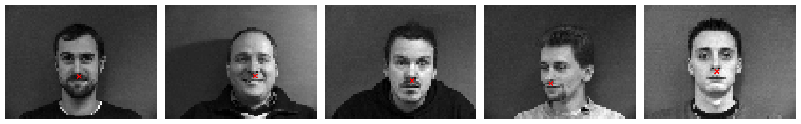
CNN
After experimenting, we ended up implementing this one:
Layer 1:
Conv2d(in_channels = 1, outchannels = 20, kernel_size = 3, stride = 2, padding = 0)
ReLU()
Layer 2:
Conv2d(in_channels=20, out_channels=20, kernel_size=3, stride=2, padding=0)
ReLU()
MaxPool2d(kernel_size=2, stride=2)
Layer 3:
Conv2d(in_channels=20, out_channels=40, kernel_size=3, stride=1, padding=0)
ReLU()
Layer 4:
Conv2d(in_channels=40, out_channels=40, kernel_size=3, stride=1, padding=0)
ReLU()
MaxPool2d(kernel_size=2, stride=2)
Fully Connected Layer:
Linear(80, 40)
Dropout(0.5)
Linear(40, 2)
Loss and Optimizer
We used MSELoss as the loss function.
The optimizer was Adam with a learning rate of 1e-3.
The training loop was run for 75.
Results
Here are our training and validation losses for our model using num_hidden=20 and learning rate of 1e-3
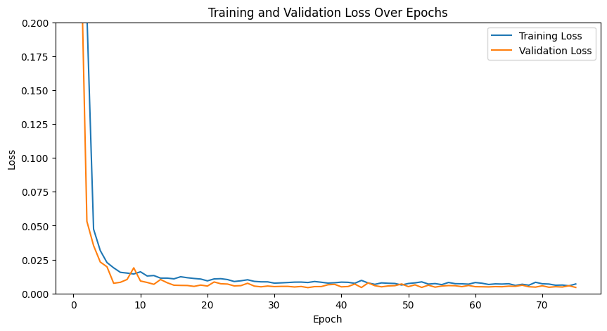
Here are two images where it worked correctly
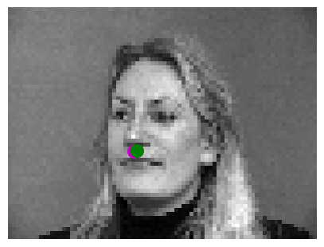
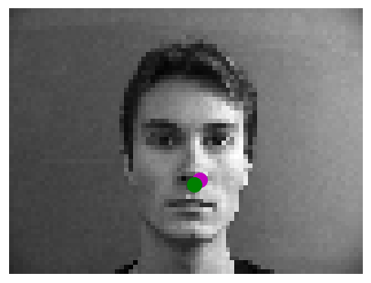
Here are two images where it failed:
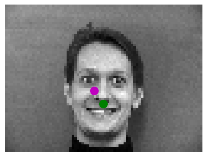
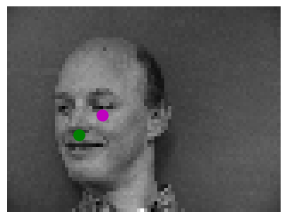
We think it fails in these cases because the faces are not completely centered and the facial
expression of the person is very noticeable which creates more edges and makes it harder for
the model to predict the nose.
Hyperparameter Tuning
We experimented with varying the learning rate to 1e-4:
here is the training and validation loss.
As we can see the losses seem more volatile.
Training loss looks higher while validation looks similar to before.
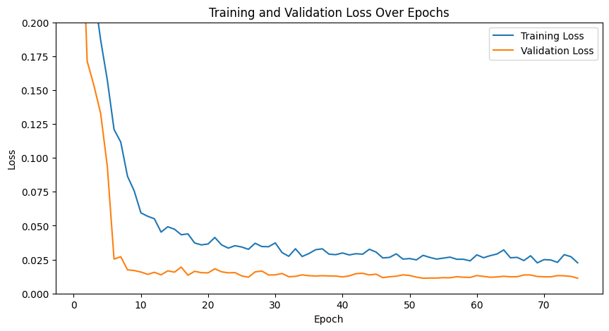
We experimented with varying the channel size:
instead of 20 hidden dimensions for initial convolution,
we used 12 and maintained the same ratios between channel size in layers.
Here is the training and validation loss. They look very volatile.
The performance was better and more continuous through images with 20 hidden dimensions.
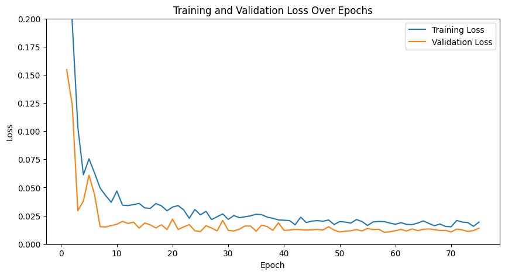
Part 2: Full Facial Keypoints Detection
Overview
In the second part of the project, we expanded the task from detecting the nose tip to predicting all
58 facial keypoints/landmarks. Using the IMM Face Database, we utilized the same dataset as
Part 1 but adjusted our dataloader and model to accommodate all keypoints.
Dataloader
For the dataloader we:
Resized images to 160x120.
Normalized pixel values to the range -0.5 to 0.5 and converted data to tensors.
Applied data augmentation: translate_percent={"x": (-0.1, 0.1), "y": (-0.1, 0.1)},rotate=(-22, 22),shear=(-0.08, 0.08)
Here we can see a few sample images of the augmented training set with their ground truth keypoints.
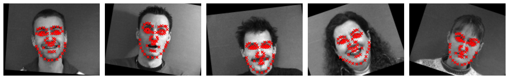
CNN
We played with different architectures. One noticeable difference we saw is that using AvgPool2d instead of MaxPool2d in
this model, improved the performance.
After experimenting with various architectures, this is our final one:

Loss and Optimizer
Loss function: MSELoss.
Optimizer: Adam with a learning rate of 1e-3.
Training loop: Run for 75 epochs.
Results
Here are our training and validation losses for the model:
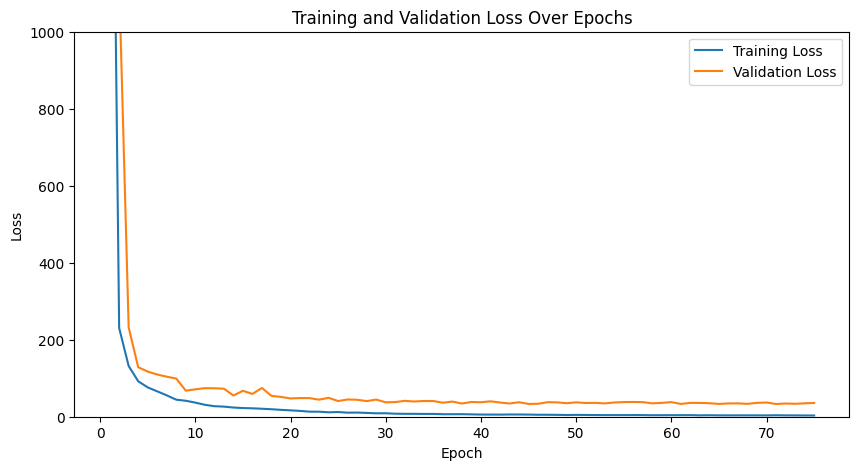
Here are two images where the model predicted the key points correctly:
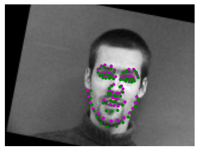
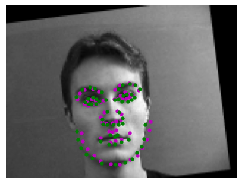
Here are two images where the model failed to predict keypoints accurately:
We think they failed in these cases because for example the facial expression on the right is very different
to others which it was trained on which are mostly serious or smiling (not yawning). For the image on the
left we think it failed because it is in the middle of moving the head completely to the side and center,
so the model gets confused on what is trying to predict.
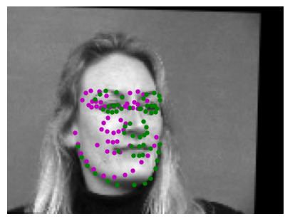
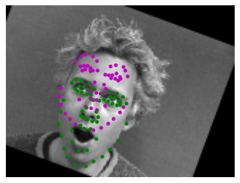
Learned Filters
Here are the learned filters of the model:
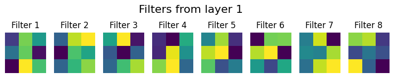
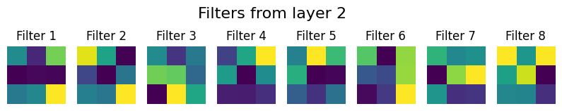
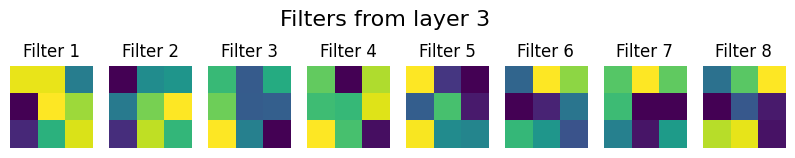
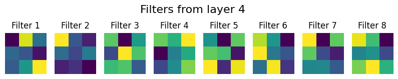
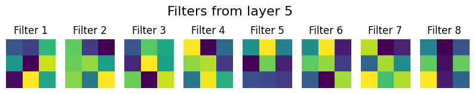
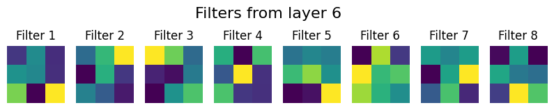
Part 3: Train With Larger Dataset
Overview
In this part, we used the ibug face dataset containing 6666 images with 68 annotated facial keypoints per image.
Dataloader
We divided the dataset given into an 80-20 split (80% for training and 20% for validation).
In order to process the data we first used the bounding boxes to crop the faces from the images.
Then we resized the cropped faces to 224x224 and adjusted the keypoints to align with the cropped
and resized images. We applied the same transformations from previous parts, but we did not augment
the validation set.
Here are some images showing the training set and validation set with the ground truth points
Training Set
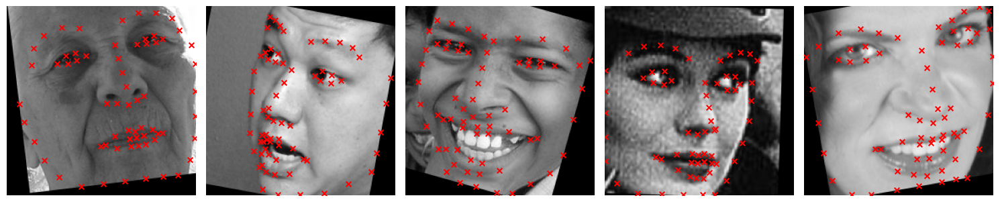
Validation Set
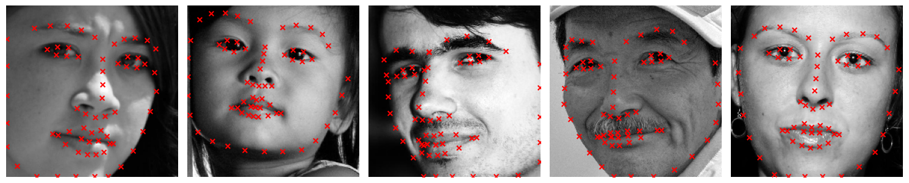
CNN
For this part, we utilized the ResNet18 model from PyTorch with slight modifications:
Input Layer Modification:
Changed the first convolutional layer input channel to 1 for grayscale images.
Output Layer Modification:
Adjusted the final fully connected layer to output 136 nodes (68 x 2 coordinates for keypoints).
Loss and Optimizer
Loss function: MSELoss.
Optimizer: Adam with a learning rate of 1e-3.
Training loop: Run for 75 epochs.
Results
Training and validation losses:
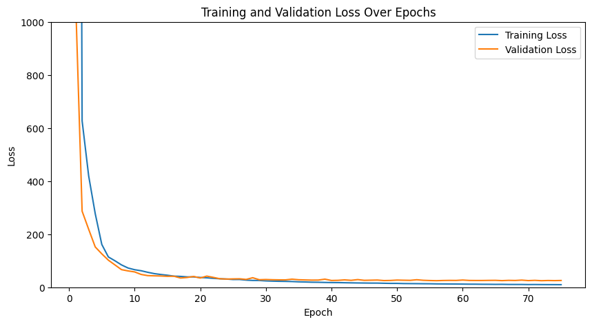
Keypoint Predictions on Testing Set
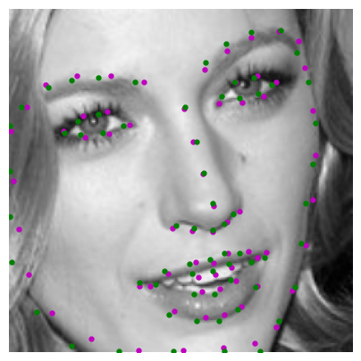
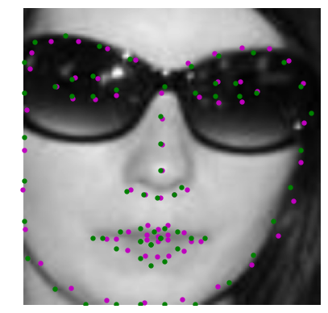
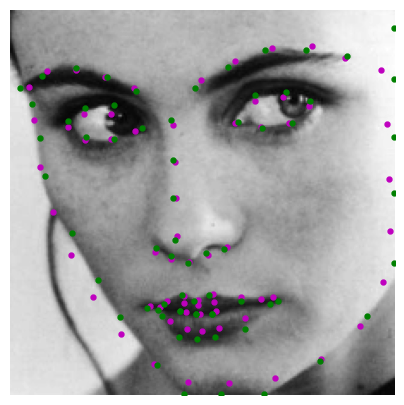
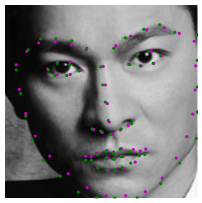
Real-World Testing
Success:
We think it worked well in this case because of the lighting and the angle of the face. The face is more clearly in the picture.
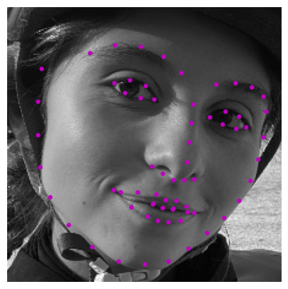
Failure
We think it didn’t work as well in these cases because of the angles at which the pictures were taken. For the first
picture the lighting is not as good and the face is very tilted as well as the glasses interfere. For the second
picture, it was taken from a top angle. Additionally, the face shape and ratios of the people in the training
set could potentially be different to these people in the pictures that failed.
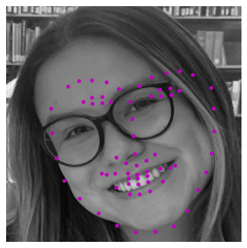
Part 4: Pixelwise Classification
Overview
This part focuses on transforming the regression problem of keypoint detection into a pixelwise classification
problem by predicting the likelihood of each pixel being a keypoint. This approach leverages heatmaps
generated from 2D Gaussian distributions at ground truth keypoint locations. The model outputs pixel-aligned heatmaps,
which are converted back to keypoint coordinates during post-processing.
Heatmap Generation
Distribution Used:
Generated heatmaps using 2D Gaussian distributions centered at the ground truth keypoint coordinates.
Parameters:
Standard Deviation: 5.0.
Sample Visualizations
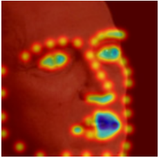
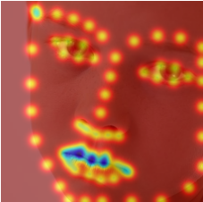
CNN
We chose U-Net and made some changes. We changed the Unet so it would accept 1 input channel
(greyscale images) instead of 3. Additionally we changed the final convolutional layer to
output 68 channels, corresponding to one heatmap for each facial keypoint.
Loss and Optimizer
Loss function: Cross Entropy Loss.
Optimizer: Adam with learning rate 5e-4.
Training loop: Run for 10 epochs.
Heatmaps back to points
To convert heatmaps back to keypoints, we identified the pixel with the highest intensity
(indicating the keypoint location) in each heatmap. This is achieved by flattening the heatmaps,
finding the maximum activation index, and translating it into (x, y) spatial coordinates.
This gives the most likely keypoint position for each landmark.
Results
Training and validation losses:
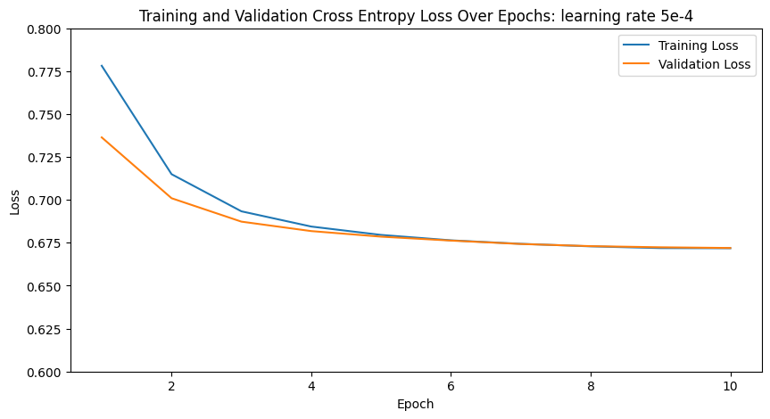
Keypoint Predictions on Testing Set
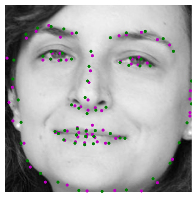
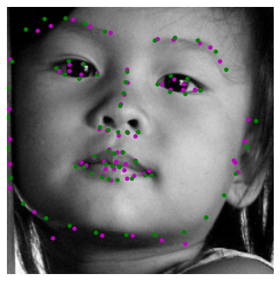
Real-World Testing
Success:
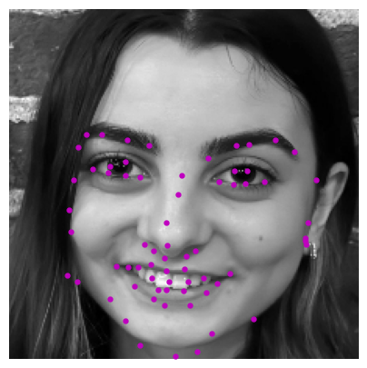
Failure
We think it failed because the position of the face makes it hard to understand where the features are.
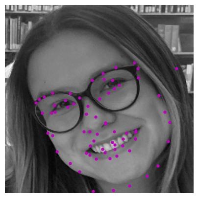
Bells and Whistles: Binary Heatmaps
Overview
For Bells and Whistles we used 1 and 0 mask heatmaps for the landmarks instead of gaussian.
Here is the training and validation of cross entropy loss. Although both models work well,
this model seems to work better than the gaussian heat map approach. Both the validation
and training loss are better and the key points appear more accurate.
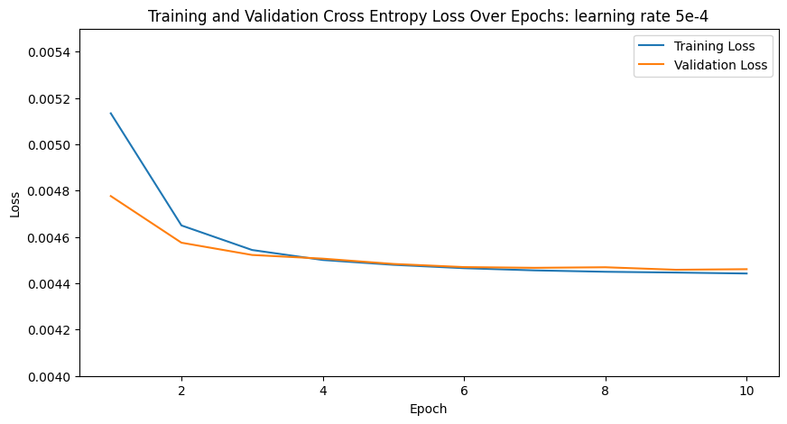
Binary VS Gaussian Heatmaps (left binary, right gaussian)
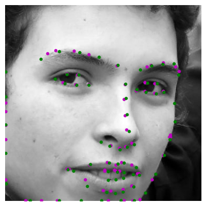
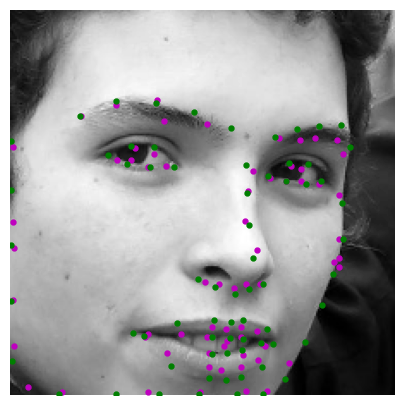
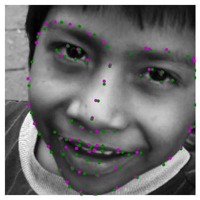
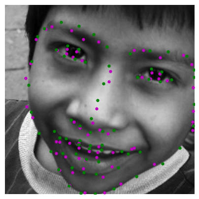
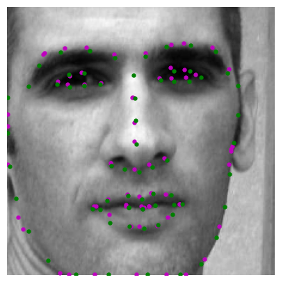
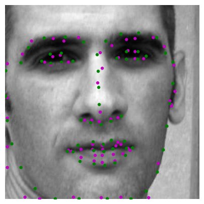
Extra Bells and Whistles: Theoretical explanation. Why is binary better?
We think binary heatmaps could be better for predicting facial keypoints because they provide a more precise
signal by marking the exact keypoint location, forcing the model to focus on that specific pixel.
In contrast, Gaussian heatmaps spread the keypoint's impact across nearby pixels, which can weaken
the model’s ability to pinpoint the exact location, especially when keypoints are close together.